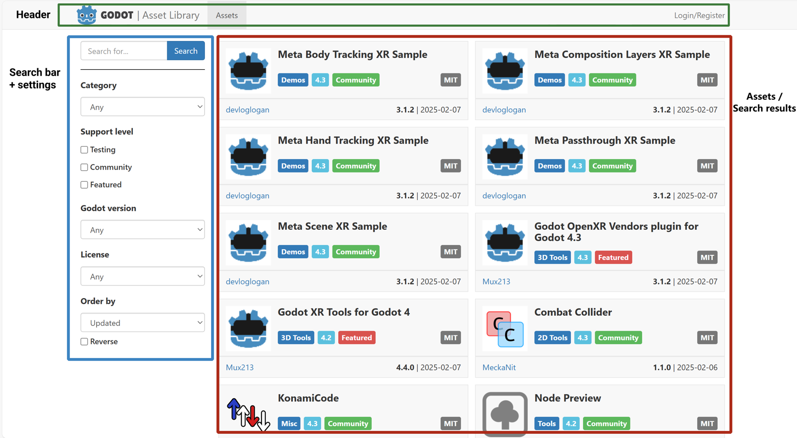
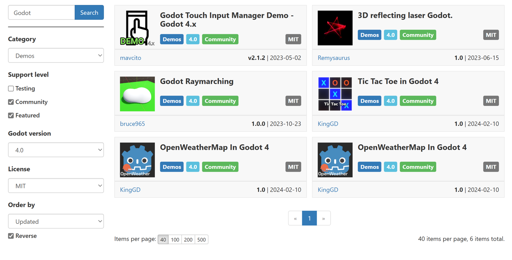
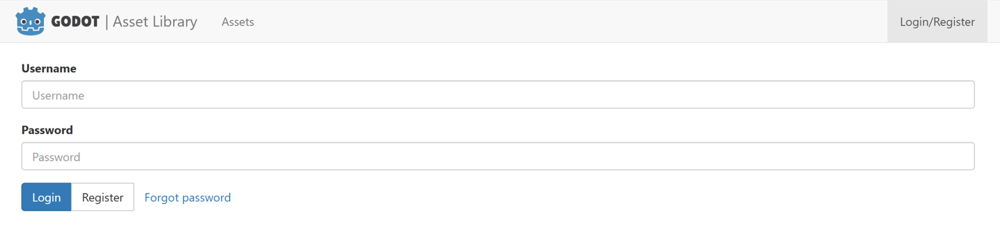
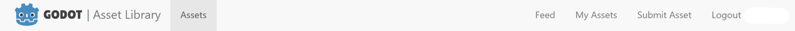
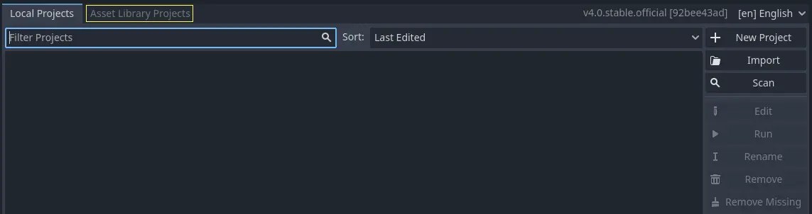
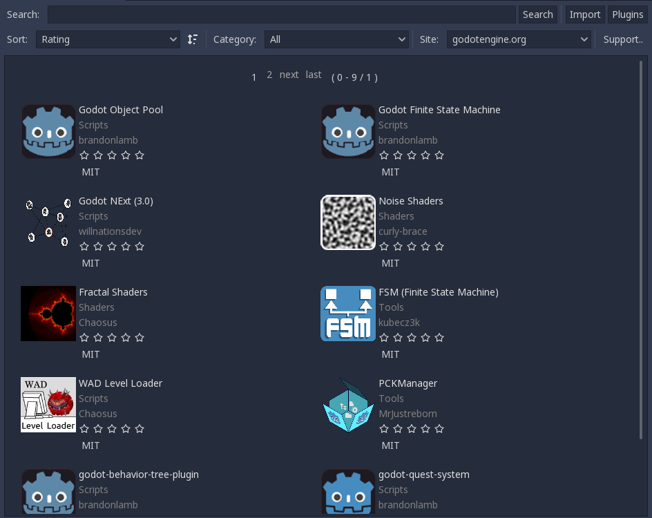
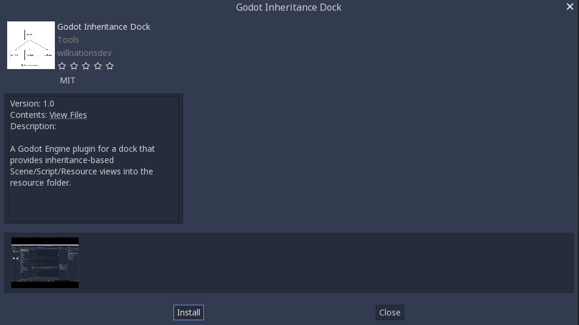
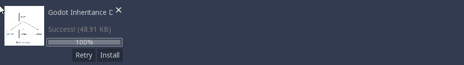
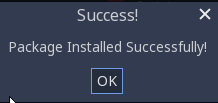

Using the Asset Library
On the website
Overview
As mentioned before, you can access the web frontend of the Asset Library on Godot's official website. This is what it looks like when you first visit it:

At the top, you see the header, which takes you to various other parts of the AssetLib - at the moment, it's empty, as we are not logged in.
Searching
In the left sidebar is the search bar + settings section, and the assets section takes up the main content area on the right. Below the search bar, you can filter assets by category (such as 2D tools, scripts and demos), support level, engine version, and license. You can also change the sorting order to sort by license, name, or update date.
While most other filter settings should be fairly self-explanatory, it's worth going over what "support level" means in the Asset Library. Currently there are three support levels, and each asset can belong to only one.
Featured assets are hand-picked resources recognized for their value to the community.
Community assets are submitted and maintained by the members of the Godot community.
Testing assets are works-in-progress, and may contain bugs and usability issues. They are not recommended for use in serious projects, but you are encouraged to download, test them, and submit issues to the original authors.
You can mix and match any of the search filters and criteria, and upon clicking the Search button, receive the list of all assets in the Library that match them.

Note that the search results are not updated in real-time, so you will have to re-submit the search query each time you change the query settings.
Breakdown of an asset
Now let's take a look at what an asset's page looks like and what it contains.

Asset's thumbnail/icon.
Asset's name.
Current version number of the asset.
Asset's category, Godot version, and support status.
Asset's original author/submitter.
The license the asset is distributed under.
The date of the asset's latest edit/update.
A textual description of the asset.
Links related to the asset (download link, file list, issue tracker).
Images and videos showcasing the asset.
Registering and logging in
In order to upload assets to the AssetLib, you need to be logged in, and to do that, you need a registered user account. In the future, this may also give you access to other features, such as commenting on or rating the existing assets. You do not need to be logged in to browse and download the assets.
The login/registration page can be accessed from the AssetLib header.

From here, you can register your account, which requires a valid email address, a username, and a (preferably strong) password.

Then, you can use your username and password to log in.

This will change the look of the AssetLib header. Now you get access to a handful of new functions:
The feed, which shows a list of status updates on your submitted assets (and possibly more in the future).
A list of your uploaded assets.
The ability to submit new assets.

You can learn how to submit assets to the Library, and what the asset submission guidelines are, in the next part of this tutorial, Submitting to the Asset Library.
In the editor
Note
The editor will display different categories of assets depending on whether you're browsing the Project Manager's Asset Library Projects tab or the editor's AssetLib tab.
The Project Manager's Asset Library Projects tab will only display assets that are standalone projects by themselves. This is denoted on the asset library with the Templates, Demos and Projects categories.
The editor's AssetLib tab will only display assets that are not standalone projects by themselves. In other words, it will display assets from all categories except Templates, Demos and Projects.
You can also access the AssetLib directly from Godot:


Click on it, and Godot will fetch info about the assets from the AssetLib. Once it's finished, you will see a window similar to what the AssetLib website looks like, with some differences:

Similarly to the web version of the AssetLib, here you can search for assets by category, name, and sort them by factors such as name or edit date.
Notably, you can only fetch assets for the current version of Godot you are running. Projects, Demos and Templates can be downloaded from the Project Manager view of the AssetLib. Addons (tools, scripts, materials etc.) can be downloaded from the in-project AssetLib and added to the current project. In addition, unlike when using the web frontend, the search results are updated in real-time (you do not have to press Search after every change to your search query for the changes to take place).
In the future, you will be able to choose a different AssetLib provider to fetch assets from (using the Site dropdown menu), however currently only the official Godot website version of the AssetLib is supported, as well as the version that may be running on your local machine's web server (the localhost option).
When you click on an asset, you will see more information about it.

If you click on the Install button, Godot will fetch an archive of the asset, and will track download progress of it at the bottom of the editor window. If the download fails, you can retry it using the Retry button.

When it finishes, you can proceed to install it using the Install button. This will bring up the Package Installer window.

Here you can see a list of all the files that will be installed. You can tick off any of the files that you do not wish to install, and Godot will also inform you about any problems with files that it cannot install. These files will be shown in red, and hovering over them will show you a message stating why it cannot be installed.

Once you are done, you can press the Install button, which will unzip all the files in the archive, and import any assets contained therein, such as images or 3D models. Once this is done, you should see a message stating that the Package installation is complete.

You may also use the Import button to import asset archives obtained elsewhere (such as downloading them directly from the AssetLib web frontend), which will take you through the same package installation procedure as with the assets downloaded directly via Godot that we just covered.